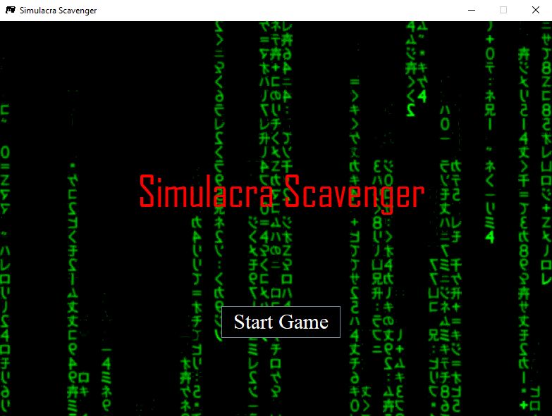
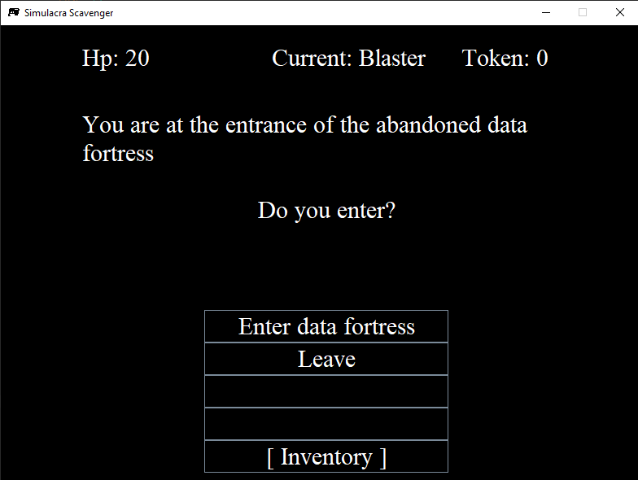
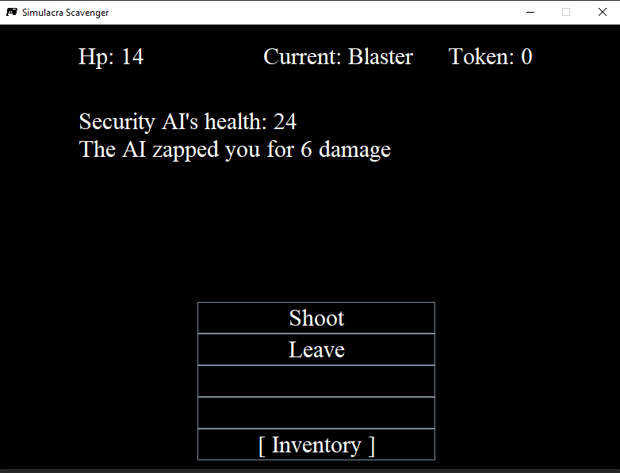
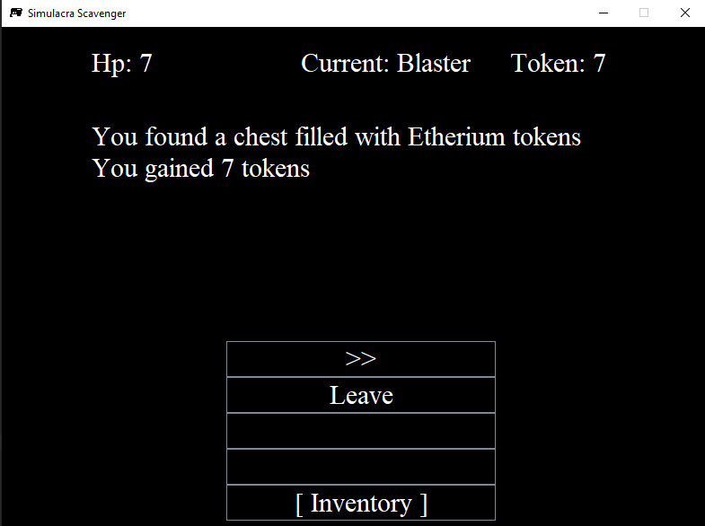

About Me
Welcome to my little web page. The name's Ben and I am a computer science major at UMSL, and I hope to work on Artificial intelligence.
Recently I have been watching a lot of peoples development logs on their small indie games, which inspired me to make my own games using the
knowledge that I have gained after two years worth of coding. Its good to have a small project to work on since it can give you experience for the future
while also, hopefully, in the end learn new things and have a finished product to show to people. Well the project that I have been working on during my off time
is a simple text based adventure game, coded in java and using java swing to create the gui. Before I have made similar text based games using java and c++, but those
were only be able to run on command line and I wanted to make something with a gui so I can send it to my friends to play. This adventure game is called
Simulacra Scavenger, and since this game is text based, there are no pictures, just text that would describe the scenario that the player is in .
You play as someone who is able to jack into an abandoned data fort to collect tokens and fend off security AIs that were set up to guard the
data fort. The game is simple, as the game would select different events at random, those events being the player encountering a chest and collecting the token or encountering
a security AI where the play would enter combat. The combat sequence is turned based with dice rolls to determine the amount of damage dealt to the security AI and player.
The game is still a work in progress as there is currently no end game. The player would just roam around the data fort forever until the player is killed in combat.
Later I would like to add in an endgame, an inventory system, and a leveling system where the player can increase their skills like damage dealt and accuracy.
Here is a link to the github page for my little game:
Simulacra Scavenger
Below are some screenshots of the game:



